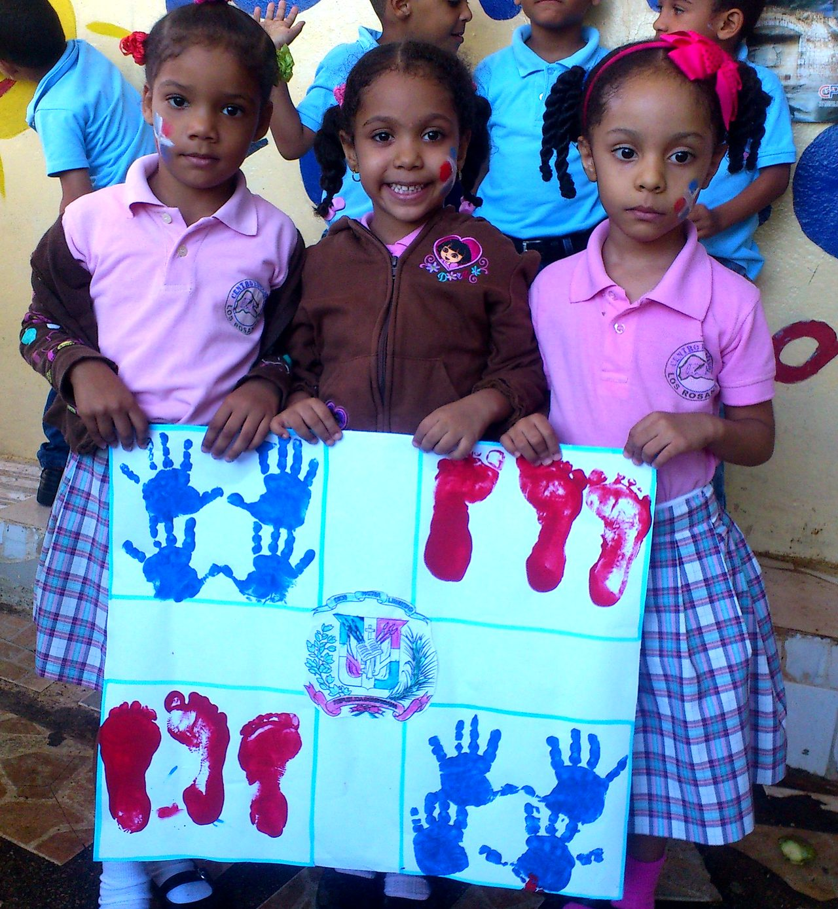
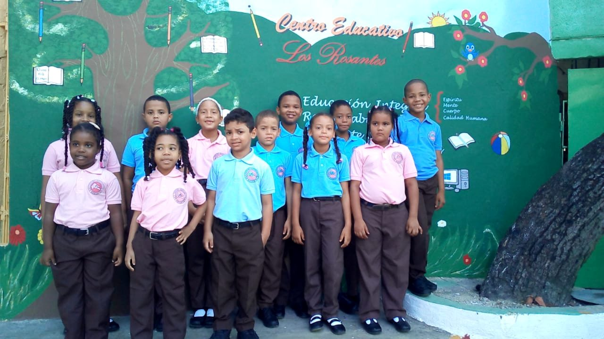
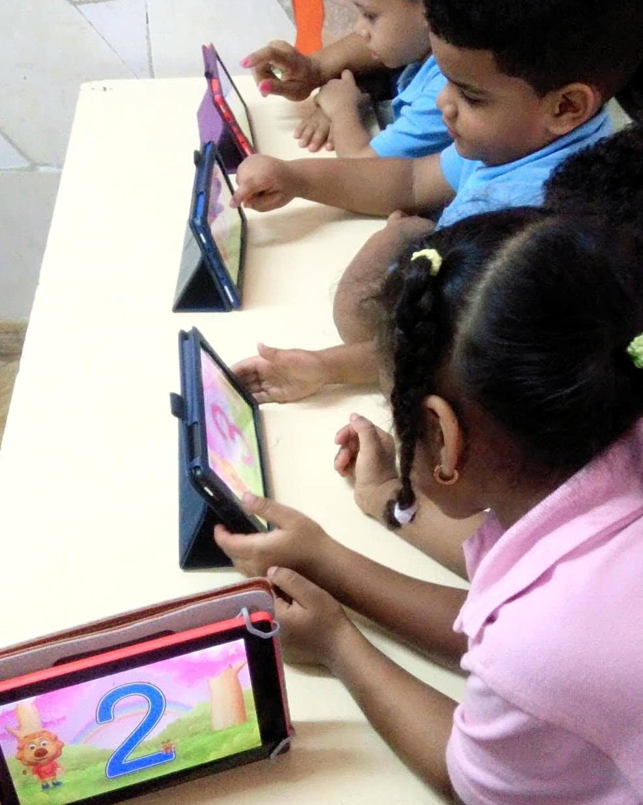
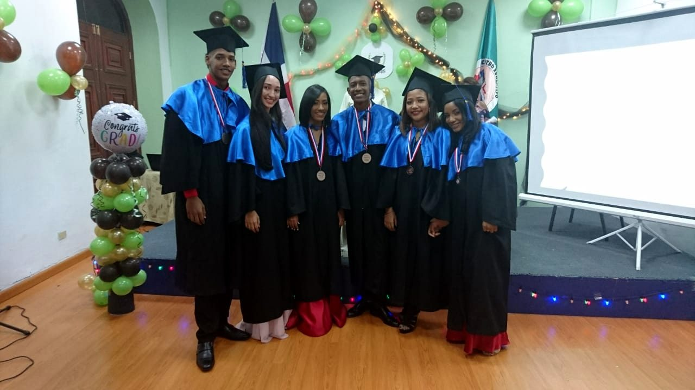
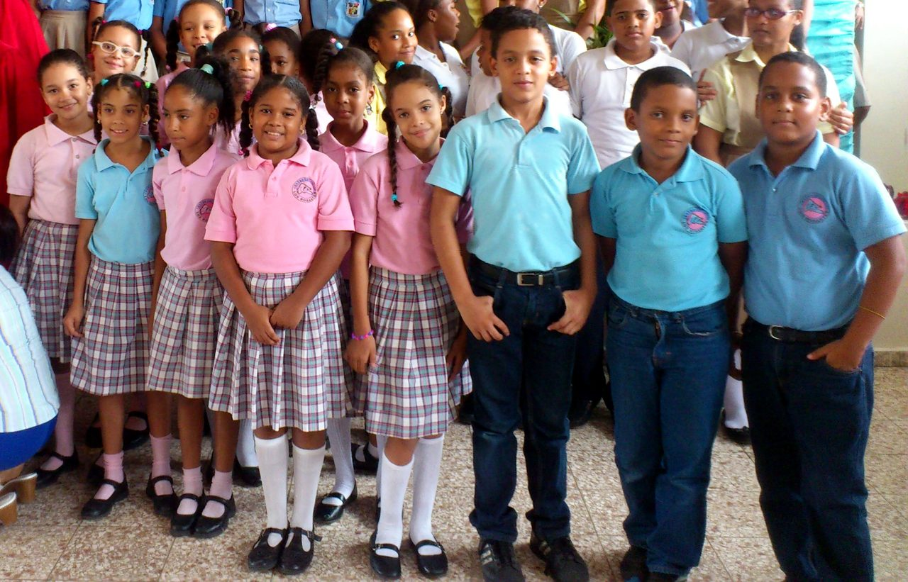
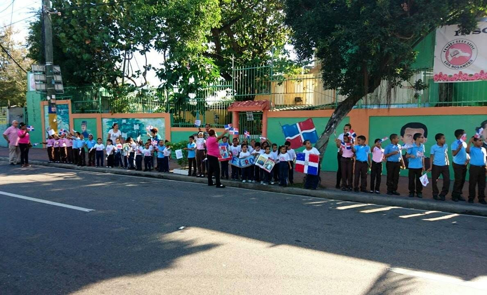

Educación Inicial
Acompañamos a cada niño y niña en sus primeros pasos escolares con atención personalizada, integrándolo desde la más temprana edad a la convivencia con su entorno familiar, escolar y social.
Más informaciónColegio en Villa Duarte, Santo Domingo Este
Más de 40 años formando a niños, niñas y jóvenes con educación integral y valores éticos, en los niveles Inicial, Primaria y Secundaria.

Nuestro lemaAprendizaje con disciplina y alegría
Niveles educativos

Acompañamos a cada niño y niña en sus primeros pasos escolares con atención personalizada, integrándolo desde la más temprana edad a la convivencia con su entorno familiar, escolar y social.
Más información
Partimos de lo aprendido en el nivel inicial y guiamos al alumno en la adquisición de los conocimientos que necesita para su desenvolvimiento cotidiano, conforme a los estándares de la educación actual.
Más información
Formamos jóvenes capaces de aportar lo mejor de sí a la sociedad, con un personal docente capacitado y el uso de las nuevas tecnologías como parte de su aprendizaje.
Más informaciónPilares institucionales
En CELROS tenemos el objetivo de brindar a la sociedad niños, niñas y jóvenes con alta calidad moral y educativa.
Somos una institución que ofrece los niveles de educación inicial, primaria y secundaria con más de 40 años de experiencia. Brindamos formación integral y de calidad, basada en valores éticos. Con un equipo docente capacitado, buscamos complementar la formación teórica con prácticas enriquecedoras para preparar a los estudiantes para los retos actuales.
Formamos a nuestros estudiantes en valores y civismo. Además de transmitir conocimientos y habilidades, fomentamos el desarrollo de valores éticos y morales que promuevan una convivencia pacífica y respetuosa en la sociedad.
Adaptamos la enseñanza a las necesidades y características de cada estudiante. Nuestros docentes conocen a sus alumnos y ajustan su metodología para garantizar un aprendizaje efectivo, con una educación inclusiva y equitativa que respeta el ritmo de cada uno.
Revisamos y actualizamos nuestro currículo de manera constante, para que los estudiantes adquieran habilidades y competencias relevantes para el mundo actual y futuro, con una educación de calidad adaptada a las necesidades de la sociedad.
Inscripción
Documentos requeridos para formalizar la inscripción del estudiante.
Para más información, comuníquese con la institución al 809-595-9110 o por WhatsApp.

Preguntas frecuentes
Trabajamos de lunes a viernes, en horario corrido de 7:30 a. m. a 4:00 p. m.
Si desea contactarnos directamente, puede llamarnos o escribirnos por WhatsApp al 809-595-9110, o visitar nuestras oficinas. Trabajamos en horario corrido de 7:30 a. m. a 4:00 p. m. También puede enviarnos un correo a info@losrosantes.edu.do, que será respondido en un plazo de 24 horas.
Av. España No. 10, Los Molinos, Villa Duarte, Santo Domingo Este, República Dominicana. Para más detalles, visite nuestra sección de contacto.
Ubicación
HorarioLunes a viernes, 7:30 a. m. – 4:00 p. m. (horario corrido)

Para información sobre el proceso de inscripción, comuníquese con la institución al 809-595-9110 o por WhatsApp.